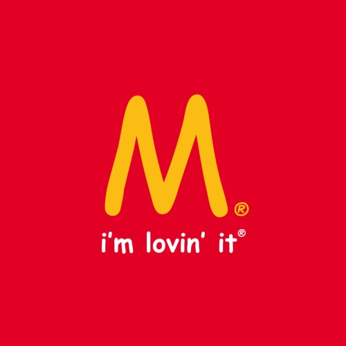
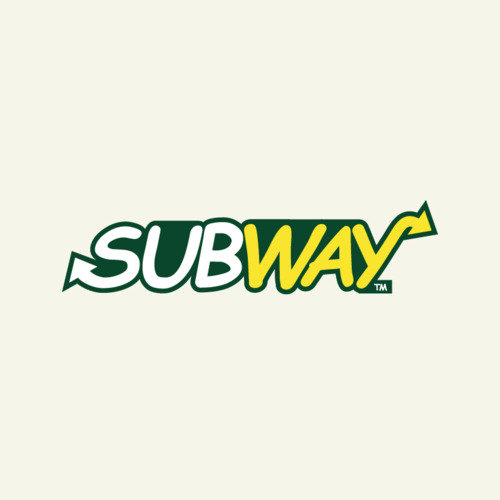

Examples



Comic Sans is a font created by Microsoft, which was designed by Vincent Connare and introduced in Windows 95 with the application "Microsoft Bob". Microsoft wanted to create a virtual office, which should make the use of the operating system more interesting, but it resulted in a failure.
More Info on Microsoft BobComic Sans is a font which is nicely readable, but not as boring as other common fonts. Especially its comicy look lets people think of it to be a cool font. Anyways this is opinion based, but many designers dislike the font.
The slurky handwrity Letters, that look so slurky and bad that you just don't want to see it, especially because of it being so overused. And this column is just here for making the two boxes symmetric.
Of course there is a legimitation to the hate on Comic Sans MS. But it's not a bad font. It's well made and a very good comicy font. The problem about it is, that people tend to misuse it a lot.